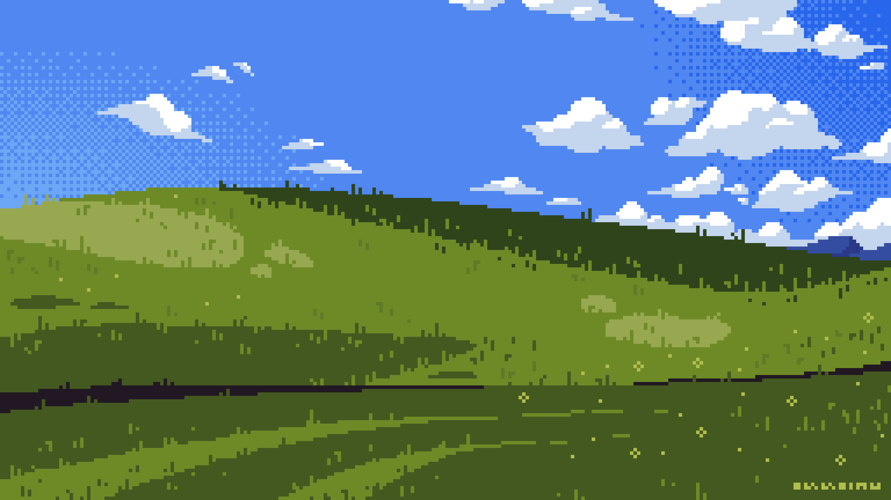
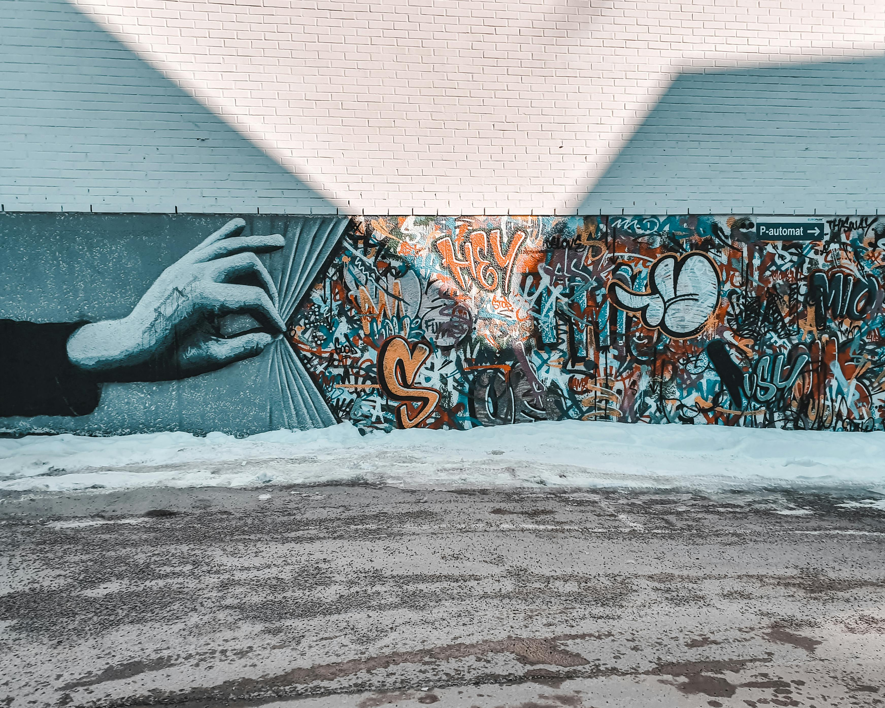
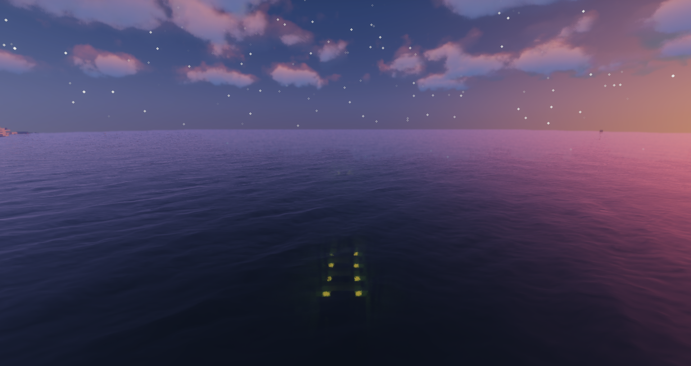
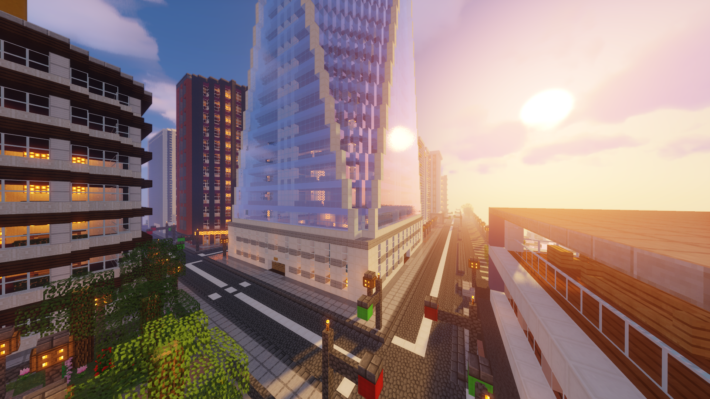
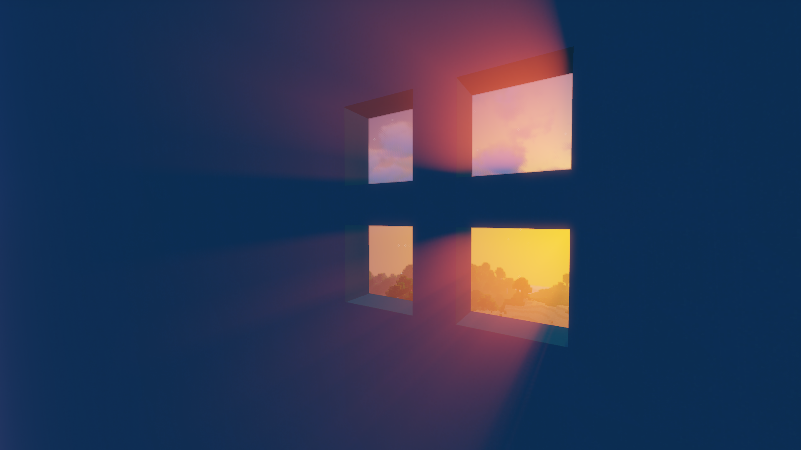
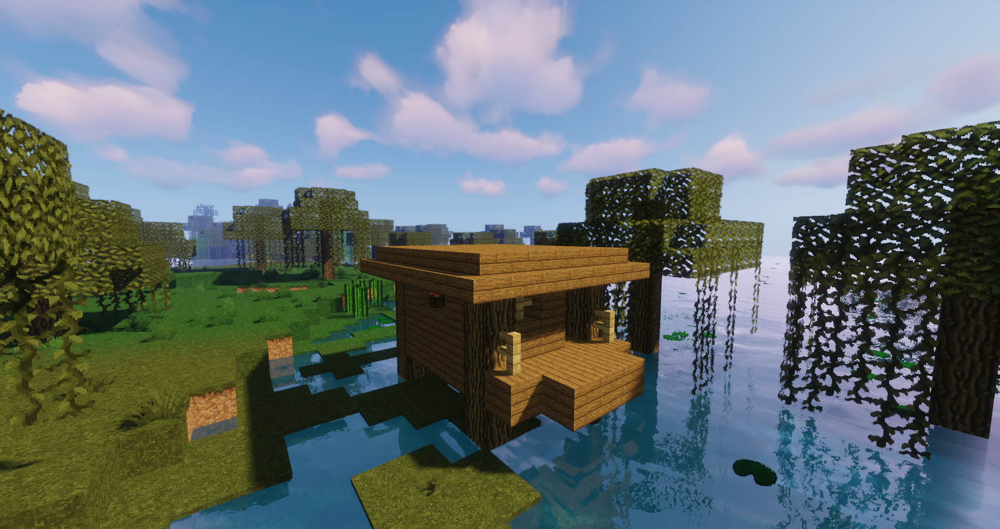

TriangleOS is a lightweight pseudo operating system UI for web.
Documentation and tutorials can be found in the github README. You can also experiment and edit this example page.
If you have any problem, question or idea, feel free to open an issue!
TriangleOS v1.1 by AKtomik
🔍︎ what can I do in a window?
TriangleOS support pure HTML, to build cool and simple window. There is a nice default style.
Use CSS to stylize your page. Of course by affecting your window content, but also by applying skins to windows.
You can interact with TriangleOS using JavaScript, to spawn window, edit them in real time, and more!
You can use <iframe> inside of a window to display others website. But be aware, it works only if the website allow it.
A window can contain any HTML content.
It is a container like another, isn't it ?
Except it can also be resized, dragged, minimized...
Use window as you see fit!
You can change a element size and skin by adding class.
You can make it red , purple or transparent or even scary .
There is a lot of defaults skins already aviable.
But you can create your owns in tos-skin.css (auto imported) or in another CSS file.
This window has a custom theme for example!
Skins can also change the look of the window itself, by changing topbar and icons.
You can override any default rule by adding skins!
Wanna see ?
how deep is it? click here to know






or is it ?
This window is big and can contain a lot of text almost bigger than this window is big and can contain a lot of text almost bigger than this window is big and can contain a lot of text almost bigger than this window is big and can contain a lot of text almost bigger than this window is big and can contain a lot of text almost bigger than this window is big and can contain a lot of text almost bigger than this window is big and can contain a lot of text almost bigger than this window is big and can contain a lot of text almost bigger than this window is big and can contain a lot of text almost bigger than this window is big and can contain a lot of text almost bigger than this window is big and can contain a lot of text almost bigger than this window is big and can contain a lot of text almost bigger than this window is big and can contain a lot of text almost bigger than this window is big and can contain a lot of text almost bigger than this window is big and can contain a lot of text almost bigger than this window is big and can contain a lot of text almost bigger than this window is big and can contain a lot of text almost bigger than this window is big and can contain a lot of text almost bigger than this window is big and can contain a lot of text almost bigger than this window is big and can contain a lot of text almost bigger than
But everything has an end :)